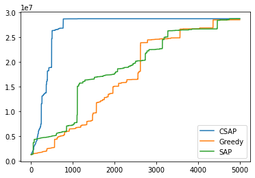

|
I am a final year undergraduate student at Indian Institute of Technology Bombay pursuing Electrical Engineering. My research interests include computer vision and machine learning. In my free time, I love to play sports especially Table Tennis. Also, I am an ardent follower of cricket. |

|
|
|

|
Guide: Prof. Shanmuganathan Raman, IIT Gandhinagar Devised a weakly supervised deep learning framework to generate high Frame Rate High Dynamic Range video from a sequence of low Frame Rate alternating exposure Low Dynamic Range frames. |

|
Guide: Prof. Subhasis Chaudhuri, Prof. Biplab Banerjee, IIT Bombay A novel GAN based architecture to generate pseudo prototypes for each class to avoid the catastropic forgetting in Incremental setup. |

|
Guide: Abhishek Agarwal, Microsoft R&D India Developed and Integrated a Size Optimized Dynamically Downloadable Entity Recognizer and Intent Classifier Model for enabling Offline Voice Commanding in Microsoft Word App |
|
|
Guide : Prof. Shanmuganathan Raman, IIT Gandhinagar 2-way GAN for Human Pose Transfer conditioned on input image and a target pose to generate a large number of fake human images in different poses and varied backgrounds |
|

|
Guide : Prof. Prasanna Chaporkar, IIT Bombay Modelled and proved the NP-Hard Optimal Network Allocation problem as an exact potential game. Graphical comparison of the convergence of potential functions of 3 Algorithms: Best Response Dynamics(BRD), Spatial Adaptive Play and Concurrent-SAP on a simulated randomized input to emulate real-world scenario. |
|
|
Guide : Prof. Biplab Banerjee, IIT Bombay Learnt a Discriminative Dictionary for sparse coding via Label Consistent K-SVD(LC-KSVD) followed by a nonlinear feature extraction method, Kernel Null Folley-Sammon Transform(KNFST), for classifying Open set samples on MNIST |
|
Projects |
|

|
Course: GNR638 - Machine Learning for Remote Sensing-II
Implementation of paper Deep Image Prior. Exploiting the inherent property of CNN to reluctantly fit on a noisy image when started with uniform noise to get off the Prior term and reconstruct the original image in a zero-shot fashion. Producing excellent results even when 80% of pixels removed form original image. |

|
Course: CS663 - Digital Image Processing
Implementation of paper Adversarial Reprogramming of Neural Networks . Computed a single adversarial perturbation added to all test inputs to reprogramme ImageNet classification model on CIFAR-10 |

|
16 bit 6-stage pipelined processor based on Little Computer Architecture. Executes 15 instructions with single and double wide fetch execution. |
|
|
Course: CS747 - Foundations of Intelligent and Learning Agents Finds the shortest path from a given start point to multiple end points in a maze using Value Iteration algorithm. |

|
Course: CS626 - Speech, Natural Language Processing and the Web A tool to convert a Constituent Parse tree to Dependency Parse tree and Vice versa |
|
|
Institute Technical Summer Project Predicts the mood of a person with additional features of turning on appropriate music and creating a caricature of the person |
Teaching
- GNR 638: Machine Learning for Remote Sensing-II [Autumn 2020]
Scholastic Achievements
- Awarded AP grade(Top 1%) for outstanding performance in both Basic and Advance level courses of Machine Learning for Remote Sensing
- Secured All India Rank 170 in JEE Advanced with a perfect score of 122/122 in Maths [2017]
- Recipient of the prestigious Kishore Vaigyanik Protsahan Yojana fellowship(SA Stream) with All India Rank 275 [2016]
- Successfully cleared NSEC and appeared for Indian National Chemistry Olympiad(INChO) [2016-17]
- Successfully cleared NSEA and appeared for Indian National Astronomy Olympiad(INAO) [2015-16]
- Recipient of National Talent Search Examination fellowship by NCERT, Govt. of India [2015]
- Successfully cleared NSEJS and appeared for Indian National Junior Science Olympiad [2014]
- Achieved International Rank 2 in 2015 and Rank 3 in 2012 in National Science Olympiad conducted by Science Olympiad Foundation.
Coding Skills
- Python
- C++
- HTML
- VHDL
- Matlab
- Java
Contact
Address Info
Hostel 3, Indian Institute of Technology Bombay
Mumbai, Maharashtra - 400076